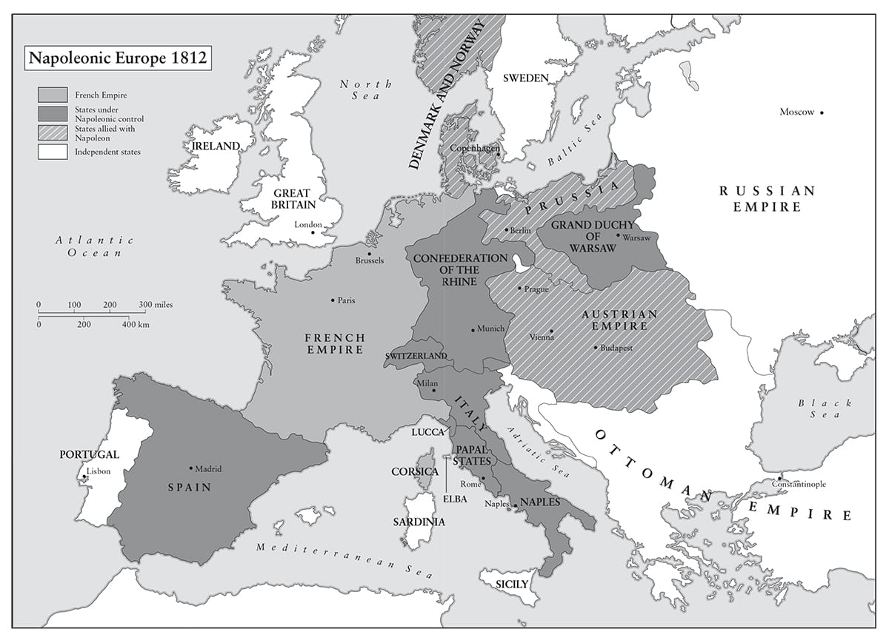

Một người Pháp dù dũng cảm, nhưng thiếu thốn kéo dài và khí hậu khắc nghiệt sẽ khiến anh ta suy sụp và nản chí. Khí hậu của chúng ta, mùa đông của chúng ta, sẽ chiến đấu bên phía chúng ta.
• Sa hoàng Alexander nói với Caulaincourt, đầu năm 1811
Không bao giờ được đòi hỏi ở Vận may nhiều hơn những gì nàng có thể ban tặng.
• Napoleon nói trên đảo St Helena
⚝ ✽ ⚝
Napoleon đi thăm thú Đế chế của ông trong nhiều tuần mỗi năm, và luôn với tốc độ chóng mặt. Vào mùa thu năm 1811, ông tới thăm 40 thành phố trong 22 ngày, bất chấp việc mất hai ngày rưỡi mắc kẹt trên boong chiến hạm Charlemagne ở Flushing vì một cơn bão, và một ngày nữa ở Givet khi nước sông Meuse dâng tràn bờ. Ông quan tâm tới thông tin lượm lặt được hơn là lắng nghe những bài diễn văn tán tụng từ các quan chức địa phương. Có lần khi một thị trưởng phải rất lao tâm khổ tứ để học thuộc một bài diễn văn, Napoleon đã “hầu như không cho ông ta thời gian để trao tặng các chìa khóa của thành phố trước khi giám mã được lệnh đánh xe đi tức thì, còn thị trưởng bị bỏ lại để diễn thuyết cho không khí”. Có lẽ thị trưởng đã được an ủi khi thấy một bài tường thuật về việc trao tặng chìa khóa cùng toàn bộ bài diễn văn của mình được in lại trên tờ Moniteur số ra ngày hôm sau. “‘Không diễn thuyết, thưa các ngài!’ thường xuyên là câu nói ngắn gọn Bonaparte dùng để cắt ngang các vị đại diện đang run rẩy này”, vị công chức Theodor von Faber nhớ lại. Những câu hỏi Napoleon đưa ra với các thị trưởng là các minh chứng cho sự thèm khát thông tin dữ dội của ông. Có thể trông đợi những câu hỏi về dân số, số tử vong, các nguồn thu, thuế rừng, thuế cầu đường, lãi suất trái phiếu hội đồng, việc gọi quân dịch, các vụ án dân sự và hình sự, mà chắc chắn Napoleon sẽ hỏi về chúng, nhưng ông cũng muốn biết “Bao nhiêu bản án ông phê chuẩn đã bị Tòa Phá án hủy bỏ?” và “Ông đã tìm ra cách để cung cấp nơi ở phù hợp cho các mục sư chưa?”
•••
“Có bằng chứng”, Napoleon viết cho Sa hoàng Alexander ngày 4 tháng Mười một năm 1810, “rằng hàng hóa thuộc địa tại Hội chợ Leipzig vừa qua được đưa tới từ Nga trên 700 chiếc xe vận chuyển… và 1.200 thương thuyền mang cờ Thụy Điển, Bồ Đào Nha, Tây Ban Nha, Mỹ, được người Anh hộ tống bằng 20 chiến hạm, đã chuyển một phần hàng hóa của họ lên bờ tại Nga”. Lá thư tiếp tục yêu cầu ông ta tịch thu “tất cả hàng hóa do người Anh đưa vào”. Đến tháng Mười hai, Napoleon lệnh cho Champagny chuyển tới Đại sứ Nga tại Paris Alexander Kurakin, đồng thời lệnh cho Caulaincourt chuyển tới Sa hoàng, một lời cảnh báo trực tiếp rằng nếu Nga mở cửa các cảng của mình cho tàu chở hàng Anh trái với Hiệp ước Tilsit, khi đó chiến tranh sẽ không thể tránh khỏi.
Chủ yếu để đấu tranh chống lại nạn buôn lậu dọc theo duyên hải Tây bắc Đức, Napoleon đã sáp nhập các thành phố thuộc liên minh Hansa như Hamburg, Bremen và Lübeck vào ngày 19 tháng Mười hai năm 1810. Sau Rome, Hanover và Hà Lan, đây là cuộc sáp nhập thứ tư của Napoleon trong 12 tháng vừa qua, và giống như những lần trước, cuộc sáp nhập này là kết quả trực tiếp từ việc ông bị ám ảnh bởi cuộc chiến tranh bảo hộ kinh tế trong nước chống lại Anh của mình. Song, việc giành lấy quyền cai quản trực tiếp những thành phố lớn này không hề có ý nghĩa gì về mặt địa lý hay thương mại, nếu không giành lấy luôn cả Công quốc Oldenburg rộng hơn 5.000 km² ở bờ trái sông Weser, còn Công tước Peter nhiếp chính đang cầm quyền tại đây là bố chồng của em gái Alexander, nữ Đại Công tước Catherine Pavlovna. Bất chấp những lời cảnh cáo lặp đi lặp lại từ Napoleon, Công quốc này tiếp tục quan hệ thương mại tương đối công khai với Anh, đến mức nơi này đã được so sánh với một nhà kho khổng lồ chứa hàng buôn lậu. Cho dù nền độc lập của Công quốc đã được bảo đảm bởi Hiệp ước Tilsit, nhưng Napoleon vẫn quyết định bịt kín lỗ hổng này và sáp nhập Oldenburg vào cùng ngày với các thành phố thuộc liên minh Hansa. Một tháng sau, ông đề nghị dành cho Công tước Peter lãnh thổ vương hầu nhỏ Erfurt để đền bù lại cho công quốc có diện tích lớn hơn sáu lần, và điều này càng khiến Alexander bị xúc phạm nặng nề hơn.
Sự căng thẳng Pháp-Nga đã hình thành từ lâu trước thời Napoleon: Louis XVI đã hỗ trợ người Ottoman chống lại sự bành trướng của Nga, và đã ủng hộ Gustav III của Thụy Điển ở Baltic. Các Sa hoàng và Nữ hoàng Nga kế tiếp nhau đã nhìn về phía tây kể từ khi Peter Đại đế tới thăm các triều đình lớn ở châu Âu (ngoại trừ Versailles) trong các chuyến đi của mình vào cuối thế kỷ 17, và St Petersburg là một minh chứng cho xu thế hướng về phía tây này. Alexander đã đưa Nga tới tận sông Danube bằng việc sáp nhập Moldavia và Wallachia, và nhìn đầy thèm muốn về phía lãnh thổ Balkan của Thổ Nhĩ Kỳ. Người Nga dưới thời bà của Alexander, Catherine Đại đế – một công chúa Đức từ lâu đã nhìn nhận Pháp là một đối thủ tiềm tàng – từng tham gia phân chia Ba Lan ba lần từ 1772 tới 1795, và cha của Alexander, Paul I, đã trở thành Đại Trưởng giáo dòng Hiệp sĩ Malta và cử Tướng Suvorov vĩ đại tiến vào Lombardy và Thụy Sĩ. Tham vọng trở thành một cường quốc hàng đầu châu Âu của Nga do đó đã tồn tại từ lâu và luôn có nguy cơ gây căng thẳng với bất cứ quốc gia nào đương là bá chủ tại châu Âu. Trong phần lớn thế kỷ 18, và dĩ nhiên dưới thời của Napoleon, đó là Pháp.
Ngay từ trước khi Napoleon sáp nhập Oldenburg, Alexander đã lên kế hoạch cho một cuộc chiến tranh nữa chống lại Pháp. Bộ trưởng Chiến tranh Barclay de Tolly, Tướng Ernst von Phull cố vấn quân sự, Bá tước d’Allonville một người Pháp lưu vong, và Bá tước Ludwig von Wolzogen cựu sĩ quan phụ tá của Sa hoàng, tất cả bắt đầu từ tháng Mười năm 1810 trở đi đều gửi cho ông ta những kế hoạch chi tiết bao hàm mọi tình huống tấn công và phòng thủ. Vào đầu tháng Mười hai, Barclay lên kế hoạch cho một trận đánh phòng ngự ở cả hai bên đầm lầy Pripet, nằm ở miền Nam Belarus và miền Bắc Ukraine ngày nay, sau khi một cuộc tấn công phủ đầu ngăn chặn trước của Nga đã tiêu diệt các căn cứ của Napoleon tại Ba Lan. Từ chỗ (như Napoleon hy vọng) là một người bạn nhiệt tình tại Tilsit, và một đồng minh miễn cưỡng tại Erfurt, thì Alexander giờ đây ngày càng giống một kẻ thù tương lai hơn.
Những ràng buộc về thương mại ở Tilsit đồng nghĩa với việc ngân khố Nga đã phải chịu đựng những khoản thâm hụt lớn đến mức không thể gánh nổi, 126 triệu rúp năm 1808, 157 triệu năm 1809, và 77 triệu năm 1810. Nợ quốc gia của nước này tăng 13 lần, gây những hậu quả nghiêm trọng đối với tiền tệ Nga. Năm 1808, lượng hàng xuất khẩu qua đường Baltic của Nga đã rớt xuống chỉ còn một phần ba mức của năm 1806. Ngày 19 tháng Mười hai, cùng ngày Napoleon sáp nhập các thành phố thuộc liên minh Hansa và Oldenburg, Sa hoàng Alexander đáp trả bằng cách ban hành một ukaz (sắc lệnh) tuyên bố từ cuối năm thương mại Nga sẽ mở cửa với các quốc gia trung lập (như Mỹ, nhưng không bao gồm Anh) và một số hàng hóa xa xỉ nhất định của Đế chế Pháp sẽ bị cấm, trong khi những mặt hàng khác – chẳng hạn như rượu vang – sẽ phải chịu mức thuế nhập khẩu rất nặng. Cambacérès tin rằng ukaz này “đã hủy hoại quan hệ thương mại của chúng ta với Nga và… bộc lộ ý định thực sự của Alexander”. Sắc lệnh chỉ rõ rằng tất cả hàng hóa sản xuất tại Anh sẽ bị đốt, nhưng cũng thêm rằng một số mặt hàng lụa và vải vóc sản xuất tại Pháp và Liên bang sông Rhine cũng sẽ bị đốt. Khi nghe tin này, Napoleon nói: “Thà ta phải nhận một cái tát còn hơn phải thấy sản phẩm của ngành công nghiệp và công sức thần dân của ta bị đốt”. Chẳng bao lâu sau những chiếc tàu Anh bắt đầu mang cờ Sao và Vạch và như vậy có thể lách qua các quy định của ukaz , với sự đồng lõa ngấm ngầm của các viên chức hải quan Nga.

Năm 1811 chứng kiến sự bắt đầu của một cuộc khủng hoảng kinh tế trên lục địa sẽ kéo dài trong hai năm và bao trùm lên cả Anh, nơi sự lo lắng lan tràn vì vụ mùa thất bát, thất nghiệp hàng loạt, cắt giảm lương, phong trào đập phá máy móc và nạn thiếu lương thực. Mulhouse ở miền Đông Pháp có 60.000 người thất nghiệp chiếm hai phần ba lực lượng lao động, còn Lyon có hơn 20.000 người thất nghiệp. Napoleon cần kích thích tăng trưởng, song quan điểm kinh tế theo kiểu Colbert của ông vốn phủ nhận ý tưởng về tự do cạnh tranh và trao đổi là những hiện tượng tích cực, đã đưa ông tới chỗ cố gắng thực hiện ngặt nghèo hơn nữa Hệ thống Lục địa, cho dù điều đó cuối cùng có thể đồng nghĩa với việc lại phải chiến đấu với Nga. Napoleon sợ rằng nếu Nga được phép rời khỏi Hệ thống, các nước khác có thể sẽ theo chân, song vào năm 1811 không nước nào dám thử làm vậy.
Đến năm 1812, Napoleon tin rằng Hệ thống Lục địa đang có hiệu quả, và chỉ ra những vụ phá sản của nhiều ngân hàng và công ty thương mại ở London để ủng hộ cho điều này. Như Nam tước Faint, thư ký riêng của ông nói: “Thêm một chút nỗ lực nữa và cuộc phong tỏa đã có thể khuất phục sự kiêu hãnh của người Anh”. Napoleon phỏng đoán rằng Anh không thể đủ sức, theo danh sách của Fain, để đồng thời “chiếm đóng Ấn Độ, theo đuổi cuộc chiến tranh với Mỹ, thiết lập các cơ sở tại Địa Trung Hải, phòng thủ Ireland và bờ biển của chính mình, đồn trú cho lực lượng hải quân khổng lồ, và cùng lúc theo đuổi cuộc chiến bướng bỉnh… chống lại chúng ta ở Bán đảo”.(*) Trên thực tế, mức độ tín nhiệm tín dụng của Chính phủ Anh và sức mạnh nội tại của kinh tế Anh lớn tới mức vừa đủ sức để gánh vác đồng thời tất cả những nhiệm vụ kể trên, nhưng Napoleon muốn đảm bảo rằng để bẻ gãy thương mại Anh, Hệ thống Lục địa cần bao phủ toàn bộ châu Âu. Sau khi đã đưa Phổ và Áo vào Hệ thống trong các năm 1807 và 1809, ông sẽ không cho phép Nga phá vỡ nó, cho dù thương mại Nga chưa bao giờ là một yếu tố quan trọng trong kinh tế Anh – không phải là yếu tố quan trọng như thương mại Anh đối với kinh tế Nga. Đến thời điểm đó, 19% xuất khẩu của Anh hướng tới bán đảo Iberia, thêm một lý do nữa cho việc đáng lẽ Napoleon nên quay trở lại đó hơn là gây sức ép lên Nga.
Napoleon không lầm khi phỏng đoán rằng Anh đang chịu tổn hại nghiêm trọng vì Hệ thống Lục địa của ông trong năm 1811 và nửa đầu năm 1812, vốn được mô tả như “những năm cực kỳ nguy hiểm cho Nhà nước Anh”. Thương mại suy giảm nhanh chóng, trái phiếu chính phủ lãi suất 3% rớt từ 70 vào năm 1810 xuống 56 năm 1812, vụ mùa thất bát năm 1811 và 1812 dẫn tới thiếu lương thực và lạm phát, chi phí chiến tranh làm tăng thâm hụt ngân sách từ 16 triệu bảng năm 1810 lên 27 triệu bảng năm 1812. Khoảng 17% dân số Liverpool thất nghiệp trong mùa đông năm 1811-1812, lực lượng dân quân đã phải triển khai để chống lại nguy cơ bạo động và phá phách máy móc nhà xưởng trên khắp vùng Midland và Bắc Anh, với những người cầm đầu bị kết án lưu đày tới Australia, thậm chí là tử hình trong một số trường hợp. Trên thực tế, thời khắc tồi tệ nhất đối với kinh tế Anh đã đến khi cuộc chiến tranh với Mỹ nổ ra vào tháng Sáu năm 1812, biểu hiện ở vấn đề thương mại và cưỡng bức quân dịch. Song, Spencer Perceval vẫn cương quyết bám lấy chương trình cung cấp chi phí cho cuộc Chiến tranh Bán đảo, trong khi đáp ứng mọi trách nhiệm khác của Anh như Fain đã liệt kê. Sức ép ghê gớm lên Anh chỉ được gỡ bỏ vào cuối năm 1812 và đầu năm 1813, nhờ kết quả chiến dịch của Napoleon tại Nga; nếu ông không tiến hành nó, không có cách nào để biết Anh có thể trụ vững bao lâu trước Hệ thống Lục địa.
Bản ukaz đã trực tiếp mâu thuẫn với các thỏa thuận tại Tilsit và Erfurt, và là một biến cố rõ ràng khơi mào cho chiến tranh, đe dọa hệ thống đế chế của Napoleon vào thời điểm ông có thể huy động một đạo quân trên 600.000 người. Tuy nhiên, ngay cả khi Napoleon có đánh bại được Nga năm 1812, thì liệu ông có thể thực thi được Hệ thống Lục địa hay không vẫn là điểu đáng ngờ. Không lẽ khi đó ông sẽ sáp nhập nốt phần bờ biển Baltic còn lại, và bố trí các nhân viên hải quan Pháp ở St Petersburg? Có khả năng ông cho rằng một Alexander bại trận sẽ phụ trách việc giám sát Hệ thống cho ông một lần nữa, như ông ta đã làm từ 1807 đến 1810, nhưng cũng đáng ngờ ở chỗ liệu khía cạnh tối quan trọng này trong kế hoạch của ông có được cân nhắc một cách chu đáo hay không. Chắc chắn không có lá thư nào trong núi thư từ khổng lồ của ông từng nhắc tới cách ông dự định áp đặt việc cấm giao dịch thương mại với Anh sau khi kết thúc chiến tranh.
Vào ngày Giáng sinh năm 1810, Alexander viết cho Vương hầu Adam Czartoryski về “việc khôi phục Ba Lan”, thẳng thừng nói rằng: “Không phải không có khả năng Nga sẽ là cường quốc thực hiện điều đó… Đây vẫn luôn là ý tưởng ưa thích của ta; các bối cảnh đã buộc ta phải hai lần trì hoãn thực hiện nó, song việc này dẫu vậy vẫn lưu lại trong tâm trí ta. Chưa bao giờ có thời điểm nào thích hợp cho việc này hơn hiện tại”. Ông ta yêu cầu Czartoryski thăm dò ý kiến của người Ba Lan xem liệu họ có chấp nhận vị thế một quốc gia “dù có được từ bất cứ phía nào, và liệu họ có gia nhập bất cứ cường quốc nào một cách gắn bó, không phân biệt, miễn là cường quốc đó chân thành ủng hộ lợi ích của họ?” Yêu cầu tuyệt đối giữ bí mật, ông ta muốn biết “Ai là sĩ quan có ảnh hưởng lớn nhất tới quan điểm của quân đội?”, đồng thời thẳng thắn thừa nhận lời đề nghị về “một sự tái lập Ba Lan… không dựa trên một hy vọng đối trọng với thiên tài của Napoleon, mà chỉ nhằm giảm bớt sức mạnh của ông ấy qua việc ly khai của Đại công quốc Warsaw, và sự bất bình chung của toàn bộ Đức chống lại ông ấy”. Ông ta kèm thêm một bảng kê cho thấy Nga, Ba Lan, Phổ và Đan Mạch hợp lại có thể huy động tới 230.000 quân, so với lực lượng 155.000 quân của Napoleon tại Đức. (Vì Alexander chỉ đưa vào con số 60.000 quân Pháp, còn Đan Mạch đang là đồng minh trung thành của Pháp, nên bảng này chẳng có mấy ý nghĩa.) Alexander kết luận bằng việc cảnh cáo Czartoryski rằng “Một thời điểm như thế chỉ xuất hiện một lần; bất cứ sự kết hợp nào khác sẽ chỉ đem đến một cuộc chiến một mất một còn giữa Nga và Pháp, với đất nước của ông là bãi chiến trường. Sự ủng hộ mà người Ba Lan có thể trông cậy vào chỉ gói gọn ở mỗi Napoleon, người không thể sống mãi”. Czartoryski trả lời một cách nhanh nhạy, đặt câu hỏi về các con số của Sa hoàng và chỉ ra rằng “người Pháp và người Ba Lan là những chiến hữu… người Nga là kẻ thù đáng ghét nhất của họ”, và có 20.000 người Ba Lan đang chiến đấu tại Tây Ban Nha, họ sẽ phải hứng chịu “sự báo thù của Napoleon” nếu họ đột ngột đổi bên.
Lá thư này đã có tác dụng khiến Alexander phản đối một cuộc tấn công từ mùa xuân năm 1811, cho dù Napoleon vẫn lo ngại về một cuộc tấn công bất ngờ cho tới tận mùa xuân năm 1812. Giá như ông biết rằng Alexander đang bí mật tìm kiếm những hiệp ước quân sự bí mật với Áo và Phổ vào lúc này, hẳn ông còn quan ngại hơn. Vào tháng Chín năm 1810, Alexander đã phê chuẩn việc Barclay tăng cường mộ lính và thực hiện những cải cách quân sự và xã hội sâu sắc. Nga áp dụng hệ thống quân đoàn và sư đoàn; Học viện Quân sự bị bãi bỏ và toàn bộ quyền lực quân sự được tập trung vào Bộ Chiến tranh; những mệnh lệnh yêu cầu các nhà máy sản xuất phục vụ quân sự vận hành cả vào những ngày nghỉ lễ của Giáo hội; một đạo luật mang tên Quy định về Quản lý một Đạo quân Thường trực Lớn được thông qua, đảm bảo bên cạnh nhiều vấn đề khác – việc thu thập và phân phát lương thực tốt hơn; quyền lực của các chỉ huy quân đội được luật hóa và quản lý; một cấu trúc tham mưu hiệu quả hơn được triển khai. Bản thân Alexander đảm nhiệm một chương trình phòng thủ quy mô lớn ở biên giới phía tây Nga, nơi được bảo vệ tương đối sơ sài vì các cuộc chiến tranh gần đây nhất của Nga đã diễn ra ở phía bắc chống lại Thụy Điển và phía nam chống lại Thổ Nhĩ Kỳ. Những công trình phòng thủ này, cùng việc tái bố trí quân từ Siberia, Phần Lan và sông Danube tới biên giới Ba Lan bị coi là một sự khiêu khích, bởi Napoleon, người mà theo lời Méneval, đã đi tới kết luận vào đầu năm 1811 rằng Nga có ý định “liên kết với Anh”. Vào tuần đầu tiên của tháng Một năm 1811, Alexander viết cho Catherine em gái mình: “Có vẻ như máu lại phải đổ ra, nhưng ít nhất ta đã làm tất cả những gì có thể mang tính nhân văn để tránh khỏi nó”. Những hành động và thư từ của ông ta ở năm trước rõ ràng đã phản bác lại ông ta.
Cả hai bên đang bắt đầu tập trung binh lực lớn. Vào ngày 10 tháng Một năm 1811, Napoleon tái tổ chức Đại quân thành bốn quân đoàn. Hai quân đoàn đầu tiên dưới quyền Davout và Oudinot đóng trên sông Elbe, một quân đoàn thứ ba do Ney chỉ huy chiếm giữ Mainz, Düsseldorf và Danzig – Danzig tới tháng Một năm 1812 đã được biến thành một thành phố căn cứ trọng yếu với đủ kho tàng dự trữ để cung cấp cho 400.000 người và 50.000 ngựa. Đến tháng Tư năm 1811, một triệu khẩu phần lương thực đã được tập trung lại chỉ riêng ở Stettin và Küstrin (ngày nay là Szczecin và Kostrzyn). Napoleon điều hành mọi thứ, từ những điều to tát – “Nếu ta phải phát động chiến tranh với Nga”, ông nói với Clarke vào ngày 3 tháng Hai, “ta tính rằng sẽ cần tới 200.000 khẩu súng hỏa mai và lưỡi lê cho những người Ba Lan nổi dậy” – cho đến một lời phàn nàn vài ngày sau rằng 29 trong số 100 người mới gọi quân dịch đã đào ngũ ở Breglio trong một cuộc hành quân tới Rome.
Napoleon không muốn chủ động gây chiến với Nga, cũng như ông đã không hề muốn điều đó với Áo vào năm 1805 và 1809, song ông sẽ không né tránh nó thông qua những nhượng bộ mà ông e sẽ gây tổn hại cho Đế chế của mình. Trong một lá thư ông trao cho sĩ quan phụ tá Sa hoàng là Đại tá Alexander Chernyshev, người đang làm ở Đại sứ quán Nga tại Paris, để chuyển cho Alexander vào cuối tháng Hai năm 1812, ông liệt kê với ngôn ngữ thân mật, chừng mực tất cả những nỗi phiền muộn của mình, nói rằng ông không bao giờ có ý định tái lập Vương quốc Ba Lan, và nhắc lại rằng những khác biệt giữa họ về những vấn đề như Oldenburg và bản ukaz có thể được giải quyết không cần xung đột. Chernyshev, người mà Napoleon không biết là một tình báo bậc thầy cực kỳ thành công của Nga tại Paris, đã mất 18 ngày để đưa lá thư cho Alexander và 21 ngày nữa để có những cuộc thảo luận cần thiết và hồi âm. Khi Chernyshev trở lại Paris, Poniatowski đã nghe ngóng được về cuộc thăm dò của Czartoryski trong giới quý tộc Ba Lan, và Napoleon đã đặt lực lượng của mình tại Đức và Ba Lan vào tình trạng báo động cao nhằm đề phòng một cuộc tấn công của Nga được trông đợi từ khoảng giữa tháng Ba tới đầu tháng Năm.
“Ta không thể tự dối mình về việc Bệ hạ không còn chút tình thân hữu nào dành cho ta”, Napoleon đã viết cho Alexander.
⚝ ✽ ⚝
Napoleon tiếp tục lập luận rằng nếu ông muốn khôi phục Ba Lan, ông đã có thể làm thế sau trận Friedland, nhưng ông đã có chủ đích không làm vậy.
Sau khi đã ra lệnh tuyển mộ lính mới từ nông nô vào ngày 1 tháng Ba, Alexander trả lời: “Cả cảm xúc lẫn quan điểm của ta đều không thay đổi, và ta chỉ mong muốn duy trì và củng cố mối quan hệ đồng minh giữa chúng ta. Chẳng phải ta mới là người được phép phỏng đoán rằng chính Bệ hạ là người đã thay đổi với ta?” Ông ta nhắc tới Oldenburg, và kết thúc lá thư có phần ngoa dụ: “Nếu phải bắt đầu chiến tranh, ta sẽ biết cách chiến đấu và đổi giá đắt cho tính mạng của mình.”
•••
Vào ngày 19 tháng Ba năm 1811, gần một năm sau cuộc gặp gỡ đầu tiên của cô với Napoleon, Marie Louise cảm thấy những cơn đau trở dạ, và như Bausset nhớ lại, “tất cả triều đình, tất cả các quan chức cao cấp của Nhà nước đều tập hợp tại Tuileries, và rất nóng lòng chờ đợi”. Không ai nóng lòng hơn Napoleon, người mà như Lavalette nhớ lại, đã “rất bồn chồn, và không ngừng đi lại từ phòng khách tới phòng ngủ rồi lại trở ra”. Ông thuê bác sĩ sản khoa Antoine Dubois với khoản tiền lớn 100.000 franc theo lời khuyên của Corvisart, “Hãy giả bộ không phải là mời ông ta đi đỡ đẻ cho Hoàng hậu, mà cho một thị dân ở phố Saint-Denis.”
Napoléon-François-Joseph-Charles chào đời lúc 8 giờ sáng thứ tư 20 tháng Ba năm 1811. Đây là một ca sinh khó, thậm chí gây tổn thương. “Về bản chất tôi không phải là người mềm yếu”, Napoleon thừa nhận nhiều năm sau, “song tôi rất xúc động khi thấy cô ấy đau đớn đến mức nào”. Đã phải cần tới những dụng cụ, đồng nghĩa với việc đứa trẻ ra đời “với một vết xước nhỏ quanh đầu” và cần “chà xát nhiều” khi được đỡ ra. “Khuôn mặt đỏ lựng của đứa trẻ cho thấy cuộc ra đời của nó đã đau đớn và khó nhọc tới mức nào”, Bausset viết. Bất chấp mọi thứ ông đã làm để có một người kế vị, Napoleon chỉ thị cho các bác sĩ nếu phải lựa chọn thì phải cứu tính mạng Hoàng hậu thay vì đứa trẻ. Đứa trẻ được phong là “Vua La Mã”, một danh xưng của Đế chế La Mã Thần thánh, và được những người tuyên truyền cho Bonaparte đặt biệt danh là “L’Aiglon” (Đại bàng nhỏ).
Tên thánh thứ hai của đứa trẻ là một sự bày tỏ lòng tôn kính với ông ngoại, Hoàng đế Áo, và tên thánh thứ tư là một dấu hiệu nữa cho thấy Napoleon yêu quý cha mình, dù không ngưỡng mộ ông ấy lắm. Vì đã được thông báo từ trước rằng nếu đẻ con gái sẽ được báo hiệu bằng 21 phát đại bác chào mừng, và nếu đẻ con trai sẽ là 101 phát, nên đã có cuộc ăn mừng lớn tại Paris khi phát đại bác thứ 22 vang lên, và lan rộng tới mức Sở Cảnh sát đã phải ngăn mọi hoạt động giao thông ở trung tâm thành phố thậm chí nhiều ngày sau đó. “Con trai ta bụ bẫm và khỏe mạnh”, Napoleon viết cho Josephine, người mà ông vẫn liên lạc một cách thân mật. “Ta hy vọng nó sẽ lớn lên khỏe khoắn. Nó có bộ ngực, cái miệng, đôi mắt của ta. Ta tin rằng nó sẽ hoàn tất định mệnh của nó”. Napoleon là một ông bố yêu con. “Hoàng đế cho đứa trẻ một chút vang đỏ bằng cách nhúng ngón tay mình vào ly rồi để nó mút”, Laure d’Abrantès nhớ lại. “Có lúc ông bôi nước xốt lên khuôn mặt hoàng tử nhỏ. Đứa trẻ lúc ấy cười như nắc nẻ”. Nhiều hoàng tộc thời đó có thái độ nghiêm khắc và không bộc lộ tình yêu với con cái của họ – nhà Bourbon Tây Ban Nha và nhà Hanover Anh hầu như có lệ căm ghét con cái họ – song Napoleon thì say mê con trai mình. Ông đặc biệt tự hào về dòng máu của cậu bé, chỉ ra rằng qua anh rể của mẹ mình mà cậu là họ hàng với nhà Romanov, qua mẹ cậu là với nhà Habsburg, qua vợ của bác cậu là với nhà Hanover và qua bà cô của mẹ cậu là với nhà Bourbon. “Gia đình ta liên kết với hoàng tộc của tất cả các quân chủ châu Âu”, ông nói. Thực tế là cả bốn hoàng tộc này hiện tại đều mong mỏi lật đổ ông, nhưng điều đó không hề làm giảm bớt sự hài lòng của Napoleon.
•••
Vào đầu tháng Tư năm 1811, Napoleon gửi một lá thư cho Vua của Württemberg, yêu cầu ông ta cùng với các Vua của Saxony, Bavaria và Westphalia cung cấp người để bảo vệ Danzig khỏi Hải quân Hoàng gia Anh. Trong lá thư này, ông suy ngẫm với một chút cam chịu đầy thi vị về xu hướng nếu cứ nói về chiến tranh tất yếu sẽ dẫn tới một cuộc đối đầu, và cho rằng Sa hoàng có thể buộc phải phát động chiến tranh dù ông ta có muốn hay không.
⚝ ✽ ⚝
Ông cũng lo ngại tác động của việc Nga và Thổ Nhĩ Kỳ đi đến nhất trí được với nhau, một điều ông đáng lẽ phải tính đến sớm hơn nhiều và có các động thái ngăn cản.
Một điều cần cân nhắc nữa đáng lẽ phải có vị trí quan trọng hơn trong tính toán của ông: Tây Ban Nha. Vào đầu tháng Năm năm 1811, Masséna đã bị Wellington đánh bại trong trận Fuentes de Oñoro, sau đó quân Pháp hoàn toàn bị đánh bật khỏi Bồ Đào Nha và không bao giờ trở lại nữa. Napoleon thay Masséna bằng Marmont – người thể hiện còn tồi tệ hơn trước Wellington – và không bao giờ sử dụng người “con cưng của chiến thắng” trong bất cứ vai trò quan trọng nào nữa. Thực ra Masséna chưa bao giờ được tiếp tế hay tăng viện đầy đủ, vì thế thất bại của ông ta phần lớn là lỗi của Napoleon. Tuy nhiên, tình hình tại Tây Ban Nha vào giữa năm 1811 không hề nguy ngập; chiến tranh du kích vẫn tiếp diễn ác liệt, song quân đội thường trực Tây Ban Nha không gây ra nguy hiểm nghiêm trọng nào. Wellington đang ở biên giới Tây Ban Nha-Bồ Đào Nha, cách xa Madrid, và phần lớn các pháo đài Tây Ban Nha (trừ Cadiz) đang trong tay Pháp. Nếu Napoleon đã không ra lệnh tập trung binh lực tại Valencia hay cung cấp thêm tăng viện, hoặc đích thân nắm quyền chỉ huy, tình hình hẳn đã được cải thiện rõ rệt, hoặc thậm chí được đảo ngược.
Do bệnh dịch, đào ngũ, du kích và hành động của quân Anh, chiến dịch Nga và không có tăng viện, nên Napoleon chỉ có 290.000 quân tại bán đảo Iberia năm 1812, và tới giữa năm 1813 con số này đã giảm xuống chỉ còn 224.000 người. Vì 80.000 lính Pháp gọi quân dịch hằng năm chỉ vừa đủ để bù đắp cho con số 50.000 thương vong mỗi năm tại Tây Ban Nha và nhu cầu của các đơn vị đồn trú tại Trung Âu, nên Napoleon đơn giản đã không có đủ lính Pháp để thực hiện một chiến dịch quy mô lớn tại Nga. Giá như ông loại bỏ “ung nhọt Tây Ban Nha” bằng cách khôi phục ngôi vị cho Ferdinand và rút quân về dãy Pyrenees vào năm 1810 hay 1811, ông hẳn đã tránh được cho mình nhiều chuyện đau đầu về sau.
•••
Ngày 17 tháng Tư năm 1811, Bộ trưởng Ngoại giao Champagny, người phản đối cuộc chiến sắp diễn ra, đã bị thay thế bởi Hugues-Bernard Maret, sau này là Công tước de Bassano, một công chức được mô tả là ngoan ngoãn, thậm chí khúm núm, người chắc chắn sẽ không gây bất cứ khó khăn nào. Các kế hoạch với Nga của Napoleon đã bị chỉ trích lớn tiếng ở các mức độ khác nhau bởi Cambacérès, Daru, Duroc, Lacuée, Lauriston, cũng như bởi Caulaincourt và Champagny. Có lẽ tất cả họ đều đã không cảnh báo với tầm nhìn xa trông rộng hay lớn tiếng như sau này họ tuyên bố, song dẫu sao đi nữa tất cả họ ở mức độ nhất định đều tỏ ý phản đối một cuộc đối đầu với Nga. Một phần của vấn đề là nhiều trong số những người vào các năm trước đây Napoleon đã có thể phải lắng nghe giờ đây đều không có mặt: Moreau và Lucien đang lưu vong lần lượt ở Mỹ và Anh; Talleyrand, Masséna và Fouché bị thất sủng; Desaix và Lannes đã chết. Hơn nữa, trước đây Napoleon thường xuyên được chứng minh là đúng khi đi ngược lại với lời khuyên của những người khác để ông cảm thấy những người phản đối có lý, thậm chí cả khi số lượng người phản đối là đáng kể. Gần như toàn bộ giới ngoại giao Pháp đều phản đối chiến tranh, song Napoleon cũng không để ý tới họ. Ông không hề có ý định tiến sâu vào nội địa Nga, vì thế vào thời điểm đó cuộc chiến không có vẻ gì giống với một canh bạc khổng lồ. Thêm nữa, trước đó ông đã từng thành công nhờ táo bạo.
Caulaincourt – người đã được Lauriston thay thế trên cương vị Đại sứ tại St Petersburg vào giữa tháng Năm, và trở về Paris để Napoleon có thể viện đến sự hiểu biết của ông về nội bộ Nga trong cuộc khủng hoảng sắp tới – mất đến năm tiếng trong một ngày tháng Sáu năm 1811 để cố thuyết phục Hoàng đế không phát động chiến tranh. Ông ta nói với ông về sự ngưỡng mộ Alexander dành cho việc du kích Tây Ban Nha đã từ chối đàm phán hòa bình bất chấp thủ đô của họ thất thủ, về những nhận xét của Alexander trước sự khắc nghiệt của mùa đông Nga, về tuyên bố của ông ta “Ta sẽ không phải là người đầu tiên rút kiếm ra, nhưng ta sẽ là người cuối cùng tra nó vào vỏ”. Ông ta nói rằng Alexander và Nga đã thay đổi một cách căn bản từ sau Tilsit, song Napoleon trả lời, “Một trận đánh ngoạn mục sẽ chấm dứt mọi quyết tâm đẹp đẽ của ông bạn Alexander của ông – và của cả những lâu đài cát của ông ta nữa!” Napoleon cũng đáp lại Maret tương tự vào ngày 21 tháng Sáu: “Nga có vẻ sợ hãi kể từ khi ta nhặt chiếc găng tay thách đấu lên, nhưng vẫn chưa có gì được quyết định. Mục tiêu của Nga có vẻ là tìm cách giành được, như sự đền bù cho Công quốc Oldenburg, việc nhượng lại hai quận của Ba Lan, điều ta không chấp nhận, vì danh dự và vì như thế sẽ hủy hoại Đại công quốc.”
Nhắc tới “danh dự”, Napoleon muốn nói về tiếng tăm của mình, song rõ ràng ông không nhận ra mình sẽ mạo hiểm danh dự, tiếng tăm và cả ngai vàng của chính mình vì hai quận của Ba Lan và sự toàn vẹn mà đến lúc đó vẫn chưa tồn tại của Đại công quốc Warsaw. Vẫn trông đợi một chiến dịch kiểu như Austerlitz-Friedland-Wagram, Napoleon tin rằng một sự lặp lại chiến dịch 1807 của ông một cách sắc bén, tập trung – dù ở quy mô lớn hơn – sẽ không tạo ra nguy cơ lớn. Thế nhưng ba cuộc mộ binh khẩn cấp năm 1812 đã gọi được ít nhất 400.000 lính quân dịch mới cho Nga, so với 1,1 triệu lính quân dịch mới trong cả giai đoạn 1805-1813. Napoleon đã không tính đến thực tế là ông sẽ phải chiến đấu với một quân đội Nga rất khác so với các đạo quân trước đây, dù vẫn là đạo quân với cùng sự kiên cường đã từng khiến ông ngưỡng mộ ở Pultusk và Golymin. Hơn nửa đội ngũ sĩ quan Nga là những chiến binh kỳ cựu, và một phần ba đã trải qua sáu trận đánh hoặc nhiều hơn. Nga đã thay đổi, song Napoleon đã không nhận ra. Vì vậy dù không tích cực tìm kiếm chiến tranh, nhưng Napoleon còn hơn cả chuyện sẵn sàng “nhặt lên chiếc găng thách đấu” được sắc lệnh ukaz của Alexander ném xuống.
•••
Một lý do hợp lý nữa để không bước vào một cuộc chiến tranh mới xuất hiện vào tháng Bảy năm 1811, khi tình hình cho thấy rõ mùa màng đã thất bát trên khắp vùng Bắc Pháp ở Normandy và trên phần lớn vùng Midi, dẫn tới thực tế mà Napoleon đã mô tả một cách riêng tư là nạn đói. Việc tài trợ cho ngành sản xuất bánh mì đã trở thành “một gánh nặng ghê gớm cho chính quyền” theo lời vị bộ trưởng có liên quan, Pasquier. Đến ngày 15 tháng Chín, một ổ bánh mì nặng 4 livre đã tăng giá gần gấp đôi lên 14 xu, và Napoleon đã “hết sức miễn cưỡng” khi chứng kiến con số này tăng lên. Ông chủ tọa một Ủy ban Lương thực thường xuyên nhóm họp, điều tra việc kiểm soát giá, trong khi theo lời Pasquier, “Nỗi lo ngại bắt đầu nhường chỗ cho kinh hoàng” ở vùng nông thôn. Với sự tăng giá dữ dội trên thị trường lương thực, những đám người khất thực đói khát lang thang khắp vùng Normandy, và các cối xay bột mì bị cướp hoặc thậm chí bị phá hủy, có thời điểm Napoleon đã phải ra lệnh đóng các cửa ô của Paris để ngăn việc đưa bánh mì ra ngoài. Ông cũng phân phát 4,3 triệu suất súp đậu khô và lúa mạch. Binh lính được điều tới Caen và các thành phố khác để trấn áp các cuộc bạo động cướp bánh mì, những người tham gia bạo động (kể cả phụ nữ) bị hành quyết. Cuối cùng, một sự kết hợp giữa kiểm soát giá lương thực và bánh mì, những nỗ lực từ thiện của các nhân sĩ tại các tỉnh do các tỉnh trưởng điều phối, các bếp ăn phân phát súp, việc trưng thu dự trữ lương thực và trừng phạt nặng những người bạo động, đã giúp giảm nhẹ vấn nạn.
Cho dù Lauriston và Rumiantsev tiếp tục đàm phán về đền bù cho việc sáp nhập Oldenburg và điều chỉnh ukaz trong mùa hè năm 1811, việc chuẩn bị chiến tranh tiếp tục ở cả hai phía biên giới Ba Lan. Vào ngày 15 tháng Tám, Napoleon chạm trán Đại sứ Kurakin trong buổi tiếp tân nhân dịp sinh nhật ông ở Tuileries. Ông đã có một lịch sử lâu dài về việc dùng ngôn ngữ rất thẳng thừng với các đại sứ – bao gồm Hồng y Consalvi về Giáo ước, Whitworth về Hiệp ước Amiens, Metternich trước thềm cuộc chiến 1809, và còn nữa – nhưng thảo luận thẳng thắn và toàn diện là một phần chức trách của các đại sứ. Trong một cuộc khiển trách kéo dài nửa tiếng, Hoàng đế giờ đây nói với Kurakin rằng sự ủng hộ mà Nga dành cho Oldenburg, những mưu toan với Ba Lan và (dường như) cả Anh, việc nước này phá vỡ Hệ thống Lục địa cùng các chuẩn bị quân sự của Nga, đồng nghĩa với việc chiến tranh có vẻ khó tránh khỏi, song Nga sẽ chịu cảnh cô độc không có bạn bè như Áo từng rơi vào năm 1809. Tất cả điều này có thể tránh được nếu có một liên minh Pháp-Nga mới. Kurakin nói ông ta không có quyền thương lượng một điều như thế. “Không có quyền?” Napoleon thốt lên. “Vậy thì ông cần viết ngay cho Sa hoàng và thỉnh cầu điều đó.”
Hôm sau, Napoleon và Maret trải qua quá trình xem xét tỉ mỉ mọi vấn đề về đền bù cho Oldenburg, công nhận Ba Lan, các kế hoạch phân chia Thổ Nhĩ Kỳ, Hệ thống Lục địa, xem xét lại tất cả những giấy tờ liên quan tới các chủ đề này từ thời kỳ Tilsit. Những điều này thuyết phục ông rằng người Nga đã không thương lượng một cách chân thành, và tối đó ông nói với Hội đồng Nhà nước là cho dù một chiến dịch chống lại Nga trong năm 1811 là không thể vì lý do khí hậu, nhưng sau khi sự hợp tác của Phổ và Áo được đảm bảo, Nga sẽ bị trừng phạt vào năm 1812. Hy vọng của Nga về các hiệp ước quân sự với Phổ và Áo đã bị xóa bỏ bởi nỗi sợ hãi của các nước này về sự trả đũa của Napoleon, cho dù cả hai đều dành cho Alexander cam kết bí mật bằng miệng rằng sự ủng hộ họ dành cho Pháp sẽ là tối thiểu, giống như cuộc tấn công của Nga với Áo năm 1809. Cách diễn đạt của Metternich cho sự ủng hộ đó là “trên danh nghĩa.”
Sự nghiêm túc trong ý định của Napoleon có thể được đoan chắc qua việc ông lại chú ý tới tình trạng giày của quân đội. Một báo cáo lưu tại Tàng thư Quốc gia của Davout gửi Napoleon ngày 29 tháng Mười một viết: “Trong chiến dịch năm 1805, nhiều binh lính đã bị tụt lại sau do thiếu giày; hiện tại ông ấy đang tích trữ sáu đôi giày cho mỗi người lính”. Không lâu sau đó, Napoleon ra lệnh cho Lacuée phụ trách quản lý hậu cần của ông phải cung cấp dự trữ lương thực cho 400.000 quân trước một chiến dịch kéo dài 50 ngày, yêu cầu 20 triệu khẩu phần bánh mì và gạo, 6.000 xe vận tải để chở đủ bột mì cho 200.000 người trong 2 tháng, và 72 triệu lít(*) yến mạch để nuôi ngựa trong 50 ngày. Báo cáo hằng tuần trong Tàng thư Bộ Chiến tranh là minh chứng cho hoạt động to lớn diễn ra đầu năm 1812. Một ví dụ được lấy ngẫu nhiên, là vào ngày 14 tháng Hai năm 1812, quân Pháp đã tiến về phía đông, tới hơn 20 thành phố Đức từ khắp các vùng ở miền Tây Đế chế. Những dấu hiệu khác về suy nghĩ của Napoleon có thể thấy trong mệnh lệnh của ông vào tháng Mười hai năm 1811 cho thủ thư Barbier, về việc sưu tập tất cả sách mà ông ta có thể tìm thấy về Lithuania và Nga. Những sách này bao gồm một số bản tường thuật, trong đó có của Voltaire, về cuộc tấn công Nga tai hại năm 1709 của Vua Thụy Điển Charles XII và việc đạo quân của ông ta bị tiêu diệt trong trận Poltava, có cả một tập sách 500 trang mô tả các nguồn tài nguyên và địa lý của Nga, cùng hai tác phẩm mới xuất bản về quân đội Nga.(*)
Vào đầu tháng Một năm 1812, Sa hoàng, người vẫn còn sáu tháng để tránh khỏi chiến tranh nếu ông ta quan tâm tới điều đó, viết cho Catherine em gái mình: “Tất cả cái chuyện chính trị quỷ quái này đang ngày một tệ hơn, và sinh vật địa ngục, vốn là sự nguyền rủa của nhân loại, ngày càng trở nên ghê tởm”. Alexander đang nhận được các báo cáo từ điệp viên Chernyshev có mật danh “Michel” làm việc tại Cục Vận tải của Bộ Chiến tranh tại Paris, cho tới khi anh ta bị bắt và hành quyết cùng ba đồng bọn vào cuối tháng Hai năm 1812. Những báo cáo này cho Alexander thấy mức độ to lớn của công cuộc chuẩn bị chiến tranh và điều động binh lính mà Pháp đang tiến hành, và kể cả kế hoạch tác chiến của Napoleon.
Ngày 20 tháng Một, trong một hành động thiển cận khác, Pháp sáp nhập vùng Pomerania thuộc Thụy Điển nhằm áp đặt Hệ thống Lục địa dọc bờ biển Baltic. Cambacérès nhớ lại rằng Napoleon đã thể hiện “không khéo lắm” với Bernadotte, người nói cho cùng vẫn là một ông hoàng và xứng đáng được dành cho một mức độ tôn trọng mới. Việc sáp nhập đã đẩy Thụy Điển về phía Nga, quốc gia mà họ đã giao chiến cùng chỉ mới hồi tháng Chín năm 1809. Thay vì thiết lập một đồng minh hữu dụng ở phía bắc, có khả năng lôi kéo quân Nga khỏi lực lượng của mình, Napoleon đã đảm bảo để Bernadotte sẽ ký một hiệp ước hữu nghị với Nga, hành động đã được ông ta thực hiện tại Åbo ngày 10 tháng Tư năm 1812.
Vào tháng Hai, Áo đồng ý cung cấp cho Napoleon 30.000 quân dưới quyền Vương hầu von Schwarzenberg cho cuộc tấn công Nga, nhưng như Metternich nói với Bộ Ngoại giao Anh, “Điều cần thiết là không chỉ Chính phủ Pháp mà cả phần lớn châu Âu phải bị đánh lừa về những nguyên tắc và dự định của tôi”. Vào thời điểm đó, Metternich không có nguyên tắc rõ ràng nào, và dự định của ông ta chỉ đơn thuần là quan sát xem cuộc tấn công của Nga diễn ra như thế nào. Một tuần sau, Phổ hứa cung cấp 20.000 quân, trước việc này một phần tư đội ngũ sĩ quan Phổ đệ đơn từ chức để phản đối, nhiều người trong số họ, chẳng hạn như chiến lược gia Carl von Clausewitz, trên thực tế đã gia nhập cùng người Nga. Napoleon từng nói, “Thà có một kẻ thù công khai còn hơn có một đồng minh đáng ngờ”, song ông đã không hành động theo niềm tin đó vào năm 1812. Với báo cáo về quy mô khổng lồ của quân đội Nga từ Davout, ông tin mình cần có càng nhiều các đội quân nước ngoài càng tốt, và họ cần được vũ trang chu đáo.“Ta đã ra lệnh trang bị súng carbine cho khinh kỵ”, ông viết cho Davout ngày 6 tháng Một. “Ta cũng muốn trang bị chúng cho lính Ba Lan; ta được biết họ chỉ có sáu khẩu cho mỗi đại đội, điều thật lố bịch, nếu xét tới việc họ phải chiến đấu với lính Cossack được vũ trang từ đầu đến chân.”
Ngày 24 tháng Hai, Napoleon viết cho Alexander nói rằng ông đã “quyết định nói chuyện với Đại tá Chernyshev về những biến cố không may đã xảy ra trong 15 tháng vừa qua. Để chấm dứt chúng chỉ còn phụ thuộc vào Hoàng thượng”. Sa hoàng bác bỏ cả nỗ lực để ngỏ cho hòa bình này. Cùng ngày, Eugène bắt đầu hành quân cùng 27.400 người của Đạo quân Italy tới Ba Lan. Theo Fain, Napoleon trong thời gian ngắn đã cân nhắc tới việc chia cắt Phổ vào giai đoạn này, và như vậy sẽ “đảm bảo an toàn từ phát đại bác đầu tiên trước mọi nguy cơ bất lợi của chiến dịch Nga”. Tuy nhiên, với người Nga tập trung hơn 200.000 quân giữa St Petersburg và Đại công quốc Warsaw, ông phải đối mặt với điều ông coi là mối đe dọa nghiêm trọng từ Nga và không thể cho phép xảy ra rối loạn sau lưng mình.(*)
Cho dù Napoleon hy vọng vào một chiến thắng chóng vánh nữa, nhưng ông đã cho kẻ thù nhiều thời gian để sắp xếp vào những năm 1811-1812 hơn bất cứ chiến dịch trước đây nào của mình. Từ thời điểm lệnh động viên đầu tiên được truyền tới các đạo quân ở Liên bang sông Rhine vào đầu năm 1811, người Nga đã có hơn một năm để chuẩn bị, khoảng thời gian này được họ sử dụng cực kỳ hiệu quả. Trong tất cả những chiến dịch khác của ông, các đối thủ của Napoleon coi như may mắn nếu họ có được vài tuần để sẵn sàng trước cuộc tấn công của ông. Kế hoạch tập trung lực lượng trên sông Drissa do Tướng von Phull thảo ra hồi mùa xuân năm 1812 đã không được phê chuẩn, khiến Bộ Tư lệnh tối cao Nga liên tục cân nhắc tới các chiến lược khác nhau, và chắc chắn đã nhìn thấu chiến lược của Napoleon mà khi đó đã rất minh bạch cho một trận quyết chiến nhanh chóng nơi biên giới.
Cho dù Napoleon gọi đây là “Chiến dịch Ba Lan Thứ hai”, nhưng ông cũng nói riêng với ban tham mưu của mình, “Chúng ta không phải lắng nghe những lời hăng hái thiếu cân nhắc về sự nghiệp Ba Lan. Pháp trên hết: đó là chính sách của tôi. Người Ba Lan không phải là chủ thể của cuộc chiến này; họ không được trở thành một vật cản cho hòa bình, song họ có thể là một công cụ chiến tranh cho chúng ta, và trước thềm một biến cố lớn lao như vậy, ta sẽ đưa ra cho họ lời khuyên hay sự dẫn dắt”. Ông chỉ định Tu viện trưởng de Pradt làm Đại sứ Pháp ở Warsaw. “Chiến dịch bắt đầu mà không có chút dự trữ hậu cần nào, đó là phương pháp của Napoleon”, Pradt sau này viết trong tập hồi ký (bài xích Napoleon kịch liệt) của mình. “Một số kẻ ngớ ngẩn ngưỡng mộ điều đó thì tin rằng đó là bí mật cho thành công của ông ấy”. Cho dù không đúng – có dự trữ hậu cần đầy đủ vào thời điểm bắt đầu chiến dịch – thì đây vẫn là một lời chỉ trích công bằng vào giai đoạn sau, một phần do sự lơ đãng và thiếu năng lực của bản thân Pradt, vì Ba Lan là kho cung cấp hậu cần chính cho chiến dịch. Một lựa chọn khả dĩ khác của Napoleon trong việc bổ nhiệm vào vị trí của Pradt là Talleyrand. Việc bất cứ ai trong số hai người này thậm chí được cân nhắc đến là dấu hiệu cho thấy khả năng đánh giá con người chính xác như thường lệ của ông đã bắt đầu suy giảm một cách tệ hại, và kẽ hở của ông với Talleyrand vẫn tiếp tục.
Mất nhiều thời gian đến mức nguy hiểm, Napoleon mới nhận ra Alexander sắp sửa tung ra những cú đòn ngoại giao quan trọng cả ở phía bắc và phía nam, cho phép ông ta tập trung lực lượng đối phó với cuộc tấn công sắp xảy ra. Tới tận ngày 30 tháng Ba năm 1812, Napoleon còn nói với Berthier, “Ta cho rằng người Nga sẽ tránh thực hiện bất cứ động thái nào, họ không thể không biết rằng Phổ, Áo, và có thể cả Thụy Điển đang đứng về phía ta; rằng sự thù địch bắt đầu tái diễn với Thổ Nhĩ Kỳ, người Thổ sẽ có những nỗ lực mới, và đích thân Quốc vương sẽ có mặt cùng quân đội, và tất cả điều này khiến họ khó lòng dễ dàng thách thức được ta”. Trên thực tế, Napoleon đã để mất sườn phía bắc qua việc không có khả năng xử sự một cách tôn trọng và bao dung với Bernadotte và Thụy Điển, đến cuối tháng Năm năm 1812 ông cũng mất cả sườn nam, dù đã phái Tướng Andreossy tới Constantinople để nói với Quốc vương Mahmud II “Nếu 100.000 quân Thổ, với Quốc vương của họ dẫn đầu, vượt qua sông Danube, ta hứa sẽ đổi lại không chỉ Moldavia và Wallachia, mà cả Crimea nữa”. Alexander đã thực hiện tương tự như cam kết của Napoleon về các tỉnh vùng Danube và ký Hiệp ước Bucharest với Thổ Nhĩ Kỳ ngày 29 tháng Năm, điều đó có nghĩa là Đạo quân Danube của Nga có thể bắt đầu đe dọa sườn phía nam của Napoleon.
Người Thổ sẽ trả giá đắt cho sai lầm này!” Napoleon nói khi nghe tin về Hiệp ước. “Nó quá ngu xuẩn tới mức ta không thể lường trước”. Nhưng sự ngu xuẩn trong trường hợp này trên thực tế lại là của ông – ông đã quá tự mãn khi trông đợi sự ủng hộ của Ottoman. Với việc đánh bại Napoleon tại Acre năm 1799, cho phép Nga triển khai lực lượng ở Balkan để chống lại ông năm 1812, quốc gia vẫn được coi là “con bệnh của châu Âu” trên thực tế đã đóng vai trò quan trọng trong hai thất bại chính của Napoleon. “Nếu có lúc nào đó ta bị buộc tội đã khuấy động nên cuộc chiến này”, Napoleon nói với Fain vào tháng Tám, “để biện minh cho ta, làm ơn hãy cân nhắc tới chuyện sự nghiệp của ta ít có liên quan đến thế nào với người Thổ, và ta đã bị Thụy Điển làm phiền ra sao!
•••
Đến 15 tháng Ba, mọi quân đoàn của Đại quân đã tới sông Elbe. Cùng ngày, Napoleon lệnh cho Louis Otto, Đại sứ Pháp tại Vienna, mua 2 triệu chai vang Hungary với giá 10 xu mỗi chai để chuyển tới Warsaw. Để tăng cường lực lượng tấn công, các đơn vị Vệ binh Quốc gia Bỉ thay thế quân Pháp tại các doanh trại nằm dọc theo bờ Đại Tây Dương, đội vệ sĩ của nữ Vương hầu Pauline Borghese được triệu hồi, đại bác được gom từ hải quân, và các bệnh viện được kiểm tra để phát hiện những kẻ giả ốm. Các đơn vị dự bị được giải thể và hợp nhất để tăng tối đa số quân có thể tới Nga; chẳng hạn, Chi đội 10 của Vệ binh Quốc gia Paris chẳng mấy chốc chỉ còn gồm toàn người bị chứng bàn chân bẹt.
Ngày 8 tháng Tư, một tuần sau khi Đại quân tới sông Oder, Alexander đưa ra một tối hậu thư lệnh cho Napoleon lập tức triệt thoái quân khỏi Phổ, vùng Pomerania thuộc Thụy Điển, Đại công quốc Warsaw, và giảm bớt lực lượng đồn trú Danzig. Đây sẽ là khởi đầu cho một cuộc sắp xếp lại biên giới của châu Âu, theo đó Nga sẽ được phép giao dịch thương mại với các quốc gia trung lập nhưng phải đàm phán về bồi thường cho Oldenburg và giảm thuế Nga đánh vào hàng hóa Pháp. Những điều kiện này rõ ràng là không thể chấp nhận được với Napoleon, và trong trường hợp nào cũng giống một bản thông cáo tuyên truyền hơn là những cơ sở thực sự cho đàm phán. Ngày 21 tháng Tư, Alexander rời St Petersburg tới căn cứ quân sự của mình ở Vilnius. Ngày 17, Napoleon đưa ra một đề nghị hòa bình cho Bộ trưởng Ngoại giao Anh, Huân tước Castlereagh, nói rằng ông sẽ rút lui khỏi bán đảo Iberia nếu người Anh cũng làm như vậy, và rằng Sicily sẽ vẫn thuộc về nhà Bourbon nếu Murat được công nhận là Vua Naples và Joseph là Vua Tây Ban Nha. “Nếu nỗ lực thứ tư này không thành công”, ông kết luận về hàng loạt đề nghị hòa bình của mình kể từ sau khi Hiệp ước Amiens đổ vỡ, “như những nỗ lực trước đó, Pháp ít nhất sẽ có được sự an ủi khi nghĩ rằng máu có thể tiếp tục đổ ra là hoàn toàn do lỗi của Anh”. Nó quả thực là cơ hội chủ nghĩa tới mức xấc xược – nhất là những điều khoản lố bịch liên quan tới Joseph và Murat – và Castlereagh, với tư cách một đệ tử chân chính của Pitt, đã đón nhận nó với sự khinh thường có thể đoán được.
Ngày 25 tháng Tư, Napoleon phái sĩ quan phụ tá của mình là Bá tước-Tướng Louis de Narbonne-Lara (người có khả năng là con trai ngoài giá thú của Louis XV) mang một đề xuất thực tế hơn nhiều để trả lời tối hậu thư của Sa hoàng, trong đó không gồm việc triệt thoái khỏi lãnh thổ các đồng minh. “Những đề nghị này sẽ chứng tỏ cho Hoàng thượng thấy mong muốn tránh khỏi chiến tranh và những tình cảm trước sau như một của ta tại Tilsit và Erfurt”, Napoleon viết. “Tuy nhiên, Hoàng thượng hãy cho phép ta cam đoan với ngài rằng, nếu số phận khiến chiến tranh trở thành không thể tránh khỏi giữa chúng ta, thì điều đó vẫn không làm thay đổi những tình cảm ta có về Hoàng thượng, không bị tác động bởi sự thay đổi và thăng trầm nào”. Các sử gia có xu hướng chỉ trích những nỗ lực lặp đi lặp lại của Napoleon nhằm duy trì tình thân hữu cá nhân với nguyên thủ của một quốc gia mà ông sắp sửa tàn phá là điều phi đạo lý, song điều đó là có thể khi nó là một phần niềm tin của ông về tình huynh đệ cao quý giữa các hoàng đế. Thời gian họ bên nhau tại Tilsit rõ ràng đã có nhiều ý nghĩa với ông hơn với Alexander. Nói với Pasquier vào tháng Năm trước khi ông lên đường ra mặt trận, Napoleon mô tả chiến dịch với Nga sắp tới như “Công cuộc vĩ đại và khó khăn nhất ta từng thực hiện. Nhưng điều gì đã được bắt đầu thì cần được hoàn tất.”
•••
Vào 6 giờ sáng Thứ bảy 9 tháng Năm, Napoleon rời Saint-Cloud cùng Marie Louise và cậu bé “Vua La Mã” để lên đường ra mặt trận. Hôm trước đó, ông đã áp đặt các loại thuế lúa mì và siết chặt việc kiểm soát giá lương thực. “Bằng cách này, ông ấy hy vọng đảm bảo rằng dân chúng sẽ hài lòng trong thời gian ông ấy vắng mặt”, Pasquier kết luận, nhưng nó chỉ là một giải pháp ngắn hạn. Như mọi khi, ông di chuyển rất nhanh: hoàng gia vượt sông Rhine ngày 13, vượt sông Elbe ngày 29 và vượt sông Vistula ngày 6 tháng Sáu, đi 850 km trong bảy ngày và trung bình 120 km mỗi ngày trong một cỗ xe ngựa trên những con đường lầy lún không được lát. Dẫu sao cũng đã tới thời điểm cho những cuộc gặp với các vị vua của Württemberg, Phổ, Saxony và Bavaria, trong đó Vua Württemberg đã từ chối gửi quân tới Tây Ban Nha năm 1810, nhưng sẽ gửi quân tới Nga; Vua Bavaria vẫn đang bực bội về việc Napoleon chưa bao giờ bồi hoàn cho ông ta các chi phí của cuộc chiến năm 1805, nhưng dù sao vẫn cử một đội quân. Marie Louise gặp lại cha mình ở đây lần đầu tiên kể từ hôn lễ của cô; còn Napoleon thì gặp lần đầu tiên kể từ khi họ gặp nhau ở cối xay gió gần Austerlitz. Francis cũng gặp cháu ngoại mình. Vua La Mã được chăm sóc bởi bảo mẫu của cậu, Phu nhân de Montesquieu, có chức danh chính thức “Bảo mẫu cho các vương tôn công tử”, cho thấy Napoleon và Marie Louise hy vọng có thêm con. Quả thực, Napoleon sau này nói ông muốn có thêm một cậu con trai nữa cho Vương quốc Italy và một cậu con trai thứ ba nữa cho chắc chắn.
Khá lâu sau này, Metternich tuyên bố rằng khi họ gặp nhau tại Dresden, Napoleon đã nói với ông ta về chiến lược của mình tại Nga. “Chiến thắng sẽ tới với ai kiên nhẫn nhất”, Hoàng đế được cho là đã nói như vậy, theo hồi ký rất đáng ngờ và đậm chất tự tâng bốc của Metternich. “Ta sẽ mở đầu chiến dịch với việc vượt sông Niemen, và chiến dịch sẽ được kết thúc tại Smolensk và Minsk. Tại đó ta sẽ dừng lại và củng cố vững chắc hai vị trí này. Tại Vilnius, nơi bản doanh chính sẽ đóng trong mùa đông kế tiếp, ta sẽ bận rộn với việc sắp xếp Lithuania… Có lẽ bản thân ta sẽ trải qua những tháng khắc nghiệt nhất của mùa đông tại Paris”. Khi được hỏi chuyện gì sẽ xảy ra nếu Alexander không cầu xin hòa bình, Napoleon được cho là đã trả lời: “Nếu thế, đến năm sau ta sẽ tiến vào trung tâm đế chế, và trong năm 1813 ta sẽ kiên nhẫn như đã kiên nhẫn trong năm 1812!” Cho dù Napoleon có thực sự tiết lộ những bí mật như vậy cho một người có những mối quan hệ mật thiết với người Nga mà ông hẳn đã nghi ngờ là không muốn mình chiến thắng tại Nga hay không, có thể là điều đáng ngờ.
Để Marie Louise lại với cha mẹ cô tại Dresden khi ông lên đường vào rạng sáng ngày 29 tháng Năm, Napoleon sau đó viết vào sáng hôm ấy rằng ông sẽ trở lại trong vòng hai tháng. “Anh sẽ giữ mọi lời hứa với em”, ông nói, “vì thế sự xa cách của chúng ta sẽ chỉ ngắn thôi”. Sẽ mất gần bảy tháng cho đến khi ông gặp lại cô. Đi về phía đông qua Bautzen, Reichenbach, Hainau, Glogau, Posen, Thorn, Danzig và Königsberg, ông tới bờ sông Niemen ngày 23 tháng Sáu. Ông chủ ý không tới Warsaw, nơi mà nếu ông tuyên bố thành lập Vương quốc Ba Lan, ông đã có thể huy động được, theo ước lượng của một tướng Nga, 200.000 quân và khiến các tỉnh có cư dân Ba Lan tại Lithuania, Volhynia và Polodia quay lại chống Sa hoàng. Thay vì thế, ông quyết định không làm mếch lòng các đồng minh Phổ và Áo của mình.
Vào 1 giờ sáng 4 tháng Sáu, Đại tá Maleszewski, một trong các sĩ quan tham mưu của Napoleon, nghe thấy Hoàng đế đi lại trong phòng mình tại Thorn, ngân nga những câu trong bài “Le Chant du Départ” (Khúc hát lên đường) trong đó có câu “Hãy run sợ, hỡi kẻ thù của Pháp”. Chỉ trong hôm đó, Napoleon đã viết nhiều thư, cho Davout phàn nàn về những hành vi cướp bóc của lính Württemberg tại Ba Lan, cho Clarke về việc thành lập một đại đội công binh người Elbe, cho Marie Louise nói rằng ông đã ở trên yên ngựa 12 tiếng kể từ 2 giờ sáng, cho Cambacérès nói rằng biên giới yên tĩnh, cho Eugène ra lệnh cung cấp 1,1 triệu lít lúa mạch, và không ít hơn 24 lá thư cho Berthier về đủ loại chủ đề từ một người phát lương cần bị trừng phạt vì thiếu năng lực cho tới một bệnh viện điều trị sốt cần được di chuyển vị trí. Cuộc chuẩn bị tấn công Nga làm Napoleon phải viết gần 500 lá thư cho Berthier từ đầu tháng Một năm 1812 cho tới khi vượt sông Niemen, và 631 lá thư nữa cho Davout, Clarke, Lacuée, và Maret.
Vào ngày 7 tháng Sáu, khi đang ở Danzig cùng Rapp – một người sẽ có nhiều khả năng được ông tiết lộ về chiến lược của mình hơn là Metternich – Napoleon nói các kế hoạch của ông giới hạn ở vượt sông Niemen, đánh bại Alexander và chiếm Ba Lan thuộc Nga mà ông sẽ hợp nhất nó với Đại công quốc, biến thành một Vương quốc Ba Lan, trang bị vũ khí đầy đủ và để lại 50.000 kỵ binh làm một quốc gia đệm chống lại Nga. Hai ngày sau, ông nói rộng sang Fain và những người khác:
⚝ ✽ ⚝
Những mục tiêu cho cuộc chiến này – thậm chí cả hòa bình với Anh, vốn bị Mỹ tuyên chiến vào ngày 1 tháng Sáu – là giới hạn, thậm chí có lẽ là khả thi, và chắc chắn còn xa mới là những điều ngạo mạn điên rồ từng được gán cho Napoleon khi tấn công Nga. Chẳng hạn như không có lời nào về việc hành quân tới Moscow (ngoại trừ trong cuộc trao đổi tâm tình mà Metternich nói là đã có với ông). So với 42,3 triệu dân của Đế chế Pháp, và thêm 40 triệu người nữa sống trong “Đại đế chế” ở các quốc gia vệ tinh, thì dân số Nga vào năm 1812 là khoảng 46 triệu. Napoleon trước đó đã hai lần chiến đấu với người Nga và đánh bại họ cả hai lần. Đạo quân gồm trên 600.000 quân của ông lớn gấp đôi về quy mô so với quân đội Nga trên chiến trường khi đó. Ngày 20 tháng Sáu, ông chỉ yêu cầu cụ thể các khẩu phần đủ 12 ngày hành quân cho Cận vệ Đế chế, ngụ ý ông đang hy vọng một chiến dịch ngắn – chắc chắn không phải chiến dịch rồi sẽ đưa ông vượt qua 1.280 km từ sông Niemen tới Moscow.
•••
Ngày 22 tháng Sáu, Napoleon ban hành bản thông cáo thứ hai của chiến dịch:
⚝ ✽ ⚝
Kể từ khi người anh hùng Julius Caesar của ông vượt sông Rubicon năm 49 TCN, chưa từng có một cuộc vượt sông nào lại đem tới điềm xấu nặng nề hơn cuộc này, khi đạo quân đông đảo của Napoleon bắt đầu vượt sông Niemen tiến vào Nga trước lúc rạng đông ngày Thứ tư, 24 tháng Sáu năm 1812. Kể từ lúc Lauriston bị mời khỏi bản doanh của Adexander mà không có câu trả lời cho đề nghị hòa bình vào phút chót của Napoleon vài ngày trước, không cần một lời tuyên chiến chính thức, giống như đã không cần khi Chiến tranh Kế vị Áo hay Chiến tranh Bảy năm nổ ra.
Trong lúc Napoleon đang xem xét con sông vào ngày vượt sông, một con thỏ rừng đã làm con ngựa của ông hoảng sợ và hất ông xuống bờ sông đầy cát, làm ông bị bầm tím bên hông. “Đây là một điềm xấu, một người La Mã hẳn sẽ lui lại!” có người thốt lên, cho dù không rõ liệu đấy chính là Napoleon hay ai đó trong ban tham mưu của ông – nhưng với khuynh hướng ưa thích lịch sử cổ đại của ông (và sự miễn cưỡng có thể hiểu được của bất cứ ai khác khi đưa ra nhận xét quá thẳng thừng đó) rất có thể người đó chính là Hoàng đế. Napoleon đã ra lệnh cho chỉ huy công binh vốn từng ở pháo binh, Tướng Jean-Baptiste Elblé, bắc ba cầu phao qua sông gần làng Poniémen, còn ông trải qua phần còn lại của hôm ấy trong lều của mình và một ngôi nhà gần đó, theo lời Ségur, “lơ đãng ngồi giữa một bầu không khí khó thở và cái nóng ngột ngạt, tranh thủ tìm chỗ nghỉ ngơi chốc lát, mà vô vọng.”
Quy mô chính xác đạo quân của Napoleon thật khó đoán. Ông có hơn một triệu người trong quân ngũ vào năm 1812; sau khi ông đã trừ đi các lực lượng đồn trú, tiểu đoàn Vệ binh Quốc gia, số lính tại 156 nhà kho ở Pháp, nhiều pháo đội bảo vệ bờ biển và 24 tiểu đoàn bộ binh đồn trú khắp đế chế cũng như tại Tây Ban Nha, thì ông còn lại 450.000 quân trên tuyến đầu để tấn công Nga và 165.000 người được huy động ở tuyến hai. Một tổng số tương đối chính xác như vậy có thể là 615.000 người, lớn hơn toàn bộ dân số Paris vào thời điểm đó. Đây chắc chắn là lực lượng tấn công lớn nhất trong lịch sử nhân loại cho tới lúc ấy, và là một lực lượng đa quốc gia. Người Ba Lan cấu thành lực lượng người nước ngoài lớn nhất, ngoài ra nó còn bao gồm người Áo, Phổ, Westphalia, Württemberg, Saxony, Bavaria, Thụy Sĩ, Hà Lan, Illyria, Dalmatia, Naples, Croat, Rome, Piedmont, Florence, Hessia, Baden, Tây Ban Nha, và Bồ Đào Nha. Nhiều người đã nói về sự rộng lớn của bảy liên minh mà Anh đã tập hợp để chống lại Pháp trong các cuộc Chiến tranh Napoleon, điều quả thực là ấn tượng và đáng kể, nhưng liên minh rộng lớn hơn cả chính là liên minh chiến đấu cho Pháp chống lại Nga này. Khoảng 48% bộ binh của Napoleon là người Pháp và 52% là người nước ngoài, trong khi 64% kỵ binh là người Pháp và 36% là người nước ngoài. Thậm chí Cận vệ Đế chế cũng có những đơn vị kỵ binh người Bồ Đào Nha và Hessia, và một chi đội Mamluk được phối thuộc với khinh kỵ của Cận vệ Già. Việc phải trông cậy rất nhiều vào người nước ngoài là một vấn đề mà nhiều người cảm thấy, như nhật ký người lính Württemberg Jakob Walter thừa nhận, “hoàn toàn dửng dưng với kết quả của chiến dịch”, coi người Pháp người Nga như nhau, và chắc chắn không cảm thấy có chút lòng trung thành cá nhân nào với Napoleon. Không sự hô hào cổ vũ nào có thể biến một người, Phổ chẳng hạn, thành một người nồng nhiệt gắn bó với công cuộc của Pháp.
Số người tham chiến và khoảng cách phân bổ rải ra của họ buộc Napoleon phải sử dụng một cách thức tổ chức quân đội khác với sáu hay bảy quân đoàn trước đó ông đã sử dụng. Tuyến đầu được tổ chức thành ba cụm tập đoàn quân. Cụm trung tâm dưới quyền chỉ huy của chính Napoleon gồm 180.000 quân, phần lớn là người Pháp. Cụm này gồm Murat với hai quân đoàn kỵ binh dự bị, Cận vệ Đế chế, các quân đoàn của Davout và Ney, cùng ban tham mưu của Berthier, lúc này đã gần 4.000 người. Bên phải ông là Quân đoàn 4 của Eugène với 46.000 quân do Junot làm Tham mưu trưởng, còn Quân đoàn kỵ binh dự bị 3 và Quân đoàn 5 của Poniatowski bố trí xa hơn về phía nam. Bên trái Napoleon là quân đoàn của Oudinot, trấn giữ cánh bắc. Tổng cộng, Đại quân có hơn 1.200 khẩu pháo.
Napoleon tấn công Nga với khoảng 250.000 con ngựa – 30.000 cho pháo binh, 80.000 cho kỵ binh và số còn lại kéo 25.000 cỗ xe đủ kiểu – tuy nhiên việc cung cấp cỏ cho nhiều ngựa đến vậy hoàn toàn vượt quá khả năng của bất cứ hệ thống nào mà Napoleon hay ai khác có thể triển khai. Ông đã trì hoãn cuộc tấn công cho tới khi có dư dật cỏ, tuy vậy cái nóng cùng với việc ăn cỏ ướt và lúa mạch đen chưa chín đã làm chết 10.000 con ngựa chỉ trong tuần đầu tiên của chiến dịch. Vì mỗi con ngựa cần 9 kg cỏ mỗi ngày, nên ông chỉ có nhiều nhất là ba tuần trước khi nguồn cung cấp bắt đầu trở nên thiếu hụt. Có 26 tiểu đoàn vận tải, 18 trong số đó gồm 600 cỗ xe hạng nặng mỗi xe do sáu ngựa kéo, có khả năng chuyên chở gần 3.000 kg, song những cỗ xe nhanh chóng bị phát hiện là quá nặng trên các con đường tại Nga khi chúng trở nên lầy lội, như đáng ra đã phải được ghi nhớ từ Chiến dịch Ba Lan Thứ nhất. Binh lính mang trên lưng bốn ngày dự trữ lương thực, và thêm 20 ngày nữa trên các cỗ xe đi theo quân đội – đủ cho chiến dịch rất ngắn mà Napoleon dự định, song nếu ông không đánh bại hoàn toàn chủ lực Nga trong vòng một tháng sau khi vượt sông Niemen, ông sẽ phải rút lui hay dừng lại và tái tiếp tế. Khoảnh khắc quan trọng này của chiến dịch do đó sẽ rơi vào tuần thứ ba của tháng Bảy, nếu không thể sớm hơn.
Nhưng đạo quân đang vượt sông Niemen không còn là đạo quân cơ động nhanh trong những chiến dịch trước của Napoleon, được tổ chức để bắt kịp và nhanh chóng bao vây kẻ thù. Chỉ riêng bản doanh của Napoleon đã cần tới 50 cỗ xe do 650 ngựa kéo. Murat mang theo một đầu bếp Paris nổi tiếng, nhiều sĩ quan mang theo cả đồ ngủ và xe ngựa riêng của họ. Nhiều yếu tố trong nghệ thuật chiến tranh Napoleon từng đặc trưng cho các chiến dịch trước đó của ông – đối thủ lớn tuổi thiếu nhiệt huyết, một kẻ thù bị chia rẽ về dân tộc và ngôn ngữ đối lập với sự thuần nhất của người Pháp, một điểm yếu mà Napoleon có thể bám lấy và không buông tha, một khả năng di chuyển nhanh hơn đáng kể so với kẻ thù, và tập trung lực lượng đạt ưu thế số lượng trong thời gian vừa đủ để giành kết quả quyết định – đều không hiện hữu hoặc đơn giản là không thể trong không gian mênh mông của phần lãnh thổ Nga thuộc châu Âu. Các tướng Nga thường có xu hướng trẻ hơn những tướng mà Napoleon đã đối đầu ở Italy – trung bình 46 tuổi so với 43 tuổi của các tướng Pháp – và quân đội Nga thuần nhất hơn đạo quân của Napoleon. Đây sẽ là một chiến dịch hoàn toàn không giống bất cứ chiến dịch nào ông từng chiến đấu trước đây, và kỳ thực là không giống bất cứ chiến dịch nào trong lịch sử.